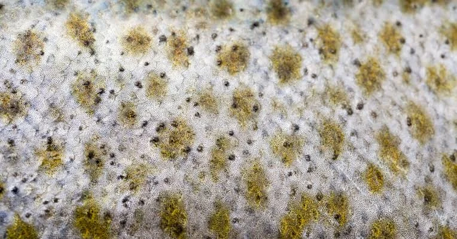
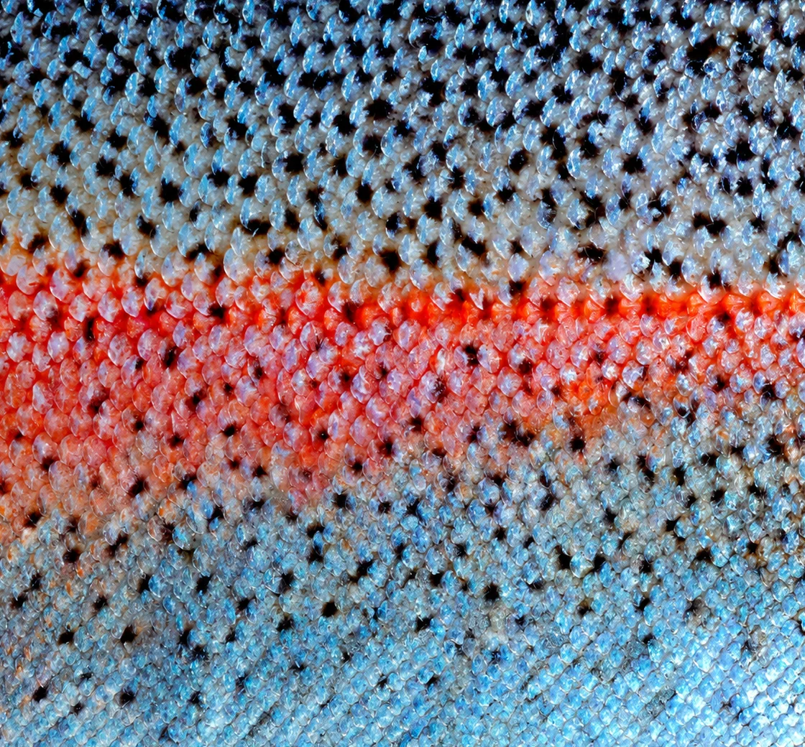

$1.3Bn
MAXIMUM ACQUISITION VALUE
DKK510M
PRE-ACQUISITION REVENUE, FY2021/22
~5%K
US BIOLOGICS MARKET SHARE
The opportunity
The fastest-growing segment in a DKK 55bn market.
Kerecis entered the biologics segment of advanced wound care - a fast-growing market concentrated almost entirely in the US.

DKK 55BN
Advanced wound care.
↓
DKK 15BN
Biologics segment.
↓
DKK 14BN
US biologics market.
↓
~5%
Kerecis market share.
Download the full case
Enter your email to receive the full PDF
The circular model
One fish. Multiple value streams.
Kerecis increases the value extracted from each fish by turning an underutilized byproduct — fish skin — into a high-value medical technology.
Bankability indicators
What Kerecis teaches us about investing in circular innovation
Kerecis demonstrates that circularity can be more than an environmental benefit. When combined with technology, evidence and market access, it can become a source of competitive advantage and commercial value.
Clinically proven,
differentiated technology
Proven commercial traction and
market access
Iceland's first
unicorn

”Some of the strongest circular opportunities may not carry a green label. Energy savings, productive use of by-products and better food preservation can create both environmental and strategic value”
CEO, The New Business Venture Fund Kria - Iceland Venture Initiative